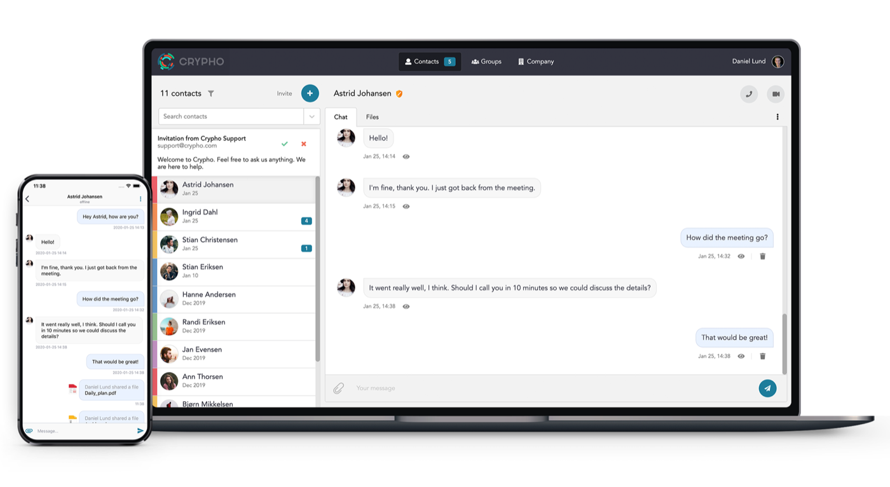
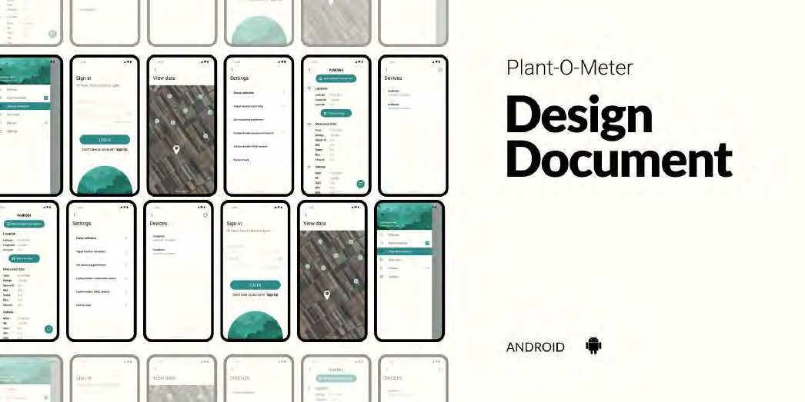

Product Designer · Tønsberg, Norway
Product designer for complex digital products.
I start by understanding the problem (the workflows, the constraints, what the system actually has to do), then design and build the parts that make it simpler to use and easier to evolve.
Based in Tønsberg, Norway
Selected work
Case studies
Every project below is a record of decisions and trade offs, what changed, and why.

Case study · Industrial HMI / Operations Software
NJORD: Rebuilding a SCADA system for control rooms
A redesign of the SCADA-grade console operators use to run a land-based aquaculture facility: full system oversight, alarm investigation, information architecture, a token-driven design system, and the real industrial constraints that shaped every decision.
Read the case study

New Laerdal Medical Support Solution
A self-service support experience built to reduce reliance on inbound help-desk calls, from information architecture through to a guided troubleshooting flow.

Crypho: secure messaging, redesigned
Redesign and feature work on an end-to-end encrypted messaging tool used by security and healthcare clients, across web, desktop and mobile.

Plant-O-Meter
Usability rework of a companion app for a precision-agriculture device, simplifying navigation and how farmers interpret plant health data.
Selected experience
Other product work
NJORD is the most recent product. These are some of the other products I've worked on.
Crypho, secure communication for web and mobile SimNext, a training ecosystem spanning instructor, participant and simulated-patient interfaces Plant-O-Meter, an agricultural product Laerdal Digital Ecosystem, connected products across Support, Connect, KnowledgeHub and Account CareClip (Motech / Tunstall), long-term product design and maintenance across five product versions Moocall, product modules BitGear, branding guidelines, website maintenance and graphic design LLEAP, Mama Anne modules Pilot Training App DBMS table on an internal Telenor webpage Štampa Knežević, website SkillTrainer (concept) Delivery app (concept) Fishing Buddy (concept) Football Reporter (concept)
How I work
Capability framework
Frame the problem, research it, design the experience, systematise it, then get it built.
Product
Problem framing · Product strategy · Information architecture
Research / Experience
User research · UX strategy · Interaction design · Prototyping
Interface
UI design · Design systems · Data-heavy interfaces · Accessibility
Delivery
Design-to-development · Documentation · Front-end collaboration
Tools
Figma · HTML/CSS · Git · React / prototyping · AI-assisted workflows
AI fits into that last column, not the headline. It speeds up exploration, documentation and prototyping.
About
I design digital products where complexity matters.
Master's in graphic design and engineering, 10+ years across UI, UX and product design, and a front-end background that means I understand what a design costs to build.
I work from problem framing through to UI and the design systems that hold a product together, and I stay close to engineering so decisions survive contact with a real codebase. That combination earns its keep on products that are data-heavy, technically constrained, or have just grown complicated over time: industrial software (see the NJORD case study), B2B platforms, tools with real regulatory or safety stakes.
Research and usability findings turn into product decisions, not a slide of insights. And because I've worked on both sides of the handoff, a design system I hand to engineering is something they can build from directly, not a set of static frames to reinterpret.
What colleagues say
Contact
Have a complex product to untangle?
I've worked across industrial software, healthcare and encrypted communication, with clients and teams under NDA more often than not. Happy to talk through what I've done and how it might apply to your product.
Tønsberg, Norway. Also available for opportunities in Sandefjord, Oslo and remote.